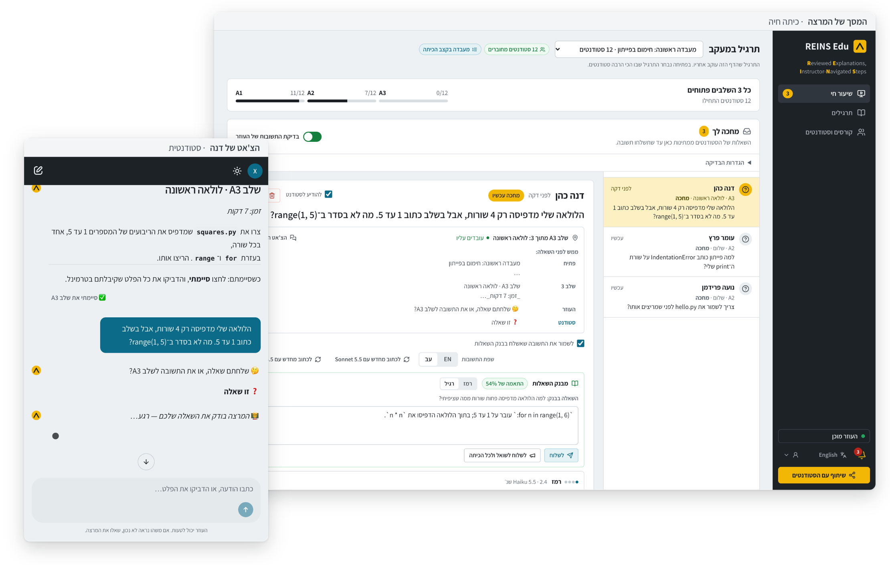

REINS Edu
REINS stands for Reviewed Explanations, Instructor-Navigated Steps
הסברים שנבדקו, שלבים בניווט המרצה

עוזר בינה מלאכותית למעבדות תכנות. המושכות נשארות בידי המרצה.
הסטודנטים פותרים את המעבדה בצ'אט עם עוזר בינה מלאכותית, שמכוון אותם לפתרון ולא נותן להם את התשובה. הכול קורה בזמן אמת: המרצה רואה כל שיחה, בודק כל תשובה לפני שהיא מגיעה לסטודנט, ושולח אותה כפי שהיא או אחרי תיקון. המרצה יכול גם לשלוח שאלה ותשובה לכל הכיתה בבת אחת, ולהוביל את הכיתה כולה, שלב אחר שלב.
חינמי ובקוד פתוח (MIT). רץ על המחשב של המרצה; הסטודנטים צריכים רק דפדפן.

מה בשליטת המרצה
הסטודנטים כבר משתמשים בבינה מלאכותית. REINS Edu מכניס אותה אל תוך המעבדה, למקום שבו אפשר לראות אותה ולכוון אותה.
כל תשובה יכולה לחכות למרצה
במצב בדיקת מרצה השאלה של הסטודנט מעוכבת. העוזר מנסח כמה תשובות, מרמז קטן ועד הסבר מלא. בוחרים אחת, עורכים אותה או כותבים תשובה אחרת, ורק אז הסטודנט רואה אותה. אפשר גם לשלוח אותה לכל הכיתה בבת אחת.
הכיתה מתקדמת יחד
במעבדה בקצב כיתתי השלבים נפתחים לכולם אחד אחד. רואים מי סיים כל שלב, פותחים את הבא כשהכיתה מוכנה, ואפשר להחזיר סטודנט בודד אחורה או לקדם אותו.
עוזר שמכוון
העוזר עונה ברמזים ובשאלות, ופועל לפי ההנחיות של המרצה לכל תרגיל. הוא לא מוסר את הפתרון.
בודקים שהבינו
אחרי שלב, או בכל רגע אחר, הסטודנטים מקבלים שאלה קצרה, והתשובות שלהם חוזרות למרצה.
שום דבר לא מתפספס
שאלות, שלבים לבדיקה ותשובות להחלטה מחכים ברשימה אחת, והסרגל שבצד סופר אותם. חלונית קופצת ופעמון מודיעים כשמשהו חדש מגיע, בכל עמוד של לוח הבקרה.
הכול נשאר אצל המרצה
החשבונות, השיחות והציונים נשמרים על המחשב של המרצה, ושום דבר לא נשלח למפתחים. השאלות נשלחות לספק המודל שנבחר, Anthropic או Google, עם מפתח ה-API של המרצה.

מהלך שיעור
הסטודנטים לא מתקינים דבר. הם פותחים קישור אחד ונכנסים.
כותבים או מעלים מעבדה
מעבדה היא תיקייה: השלבים שהסטודנטים רואים, וההנחיות והתשובות הצפויות שרק המרצה רואה. שלוש דוגמאות מגיעות עם ההתקנה.
משתפים קישור אחד
מוסיפים את הסטודנטים מקובץ CSV, בעברית או באנגלית, ולוחצים שיתוף עם הסטודנטים.
מלמדים
עוקבים אחרי השיחות, מאשרים את תשובות העוזר, ופותחים את השלב הבא כשהכיתה מוכנה.
התקנה
ל-macOS, ל-Windows ול-Linux. צריך כ-1.5 GB מקום בדיסק וחיבור לאינטרנט. ההפעלה הראשונה מתקינה את Python ואת כל השאר בתוך התיקייה של התוכנה.
macOS או Linux, בטרמינל
curl -fsSL https://raw.githubusercontent.com/Shpanier/reins-edu/main/install.sh | bashWindows, ב-PowerShell
irm https://raw.githubusercontent.com/Shpanier/reins-edu/main/install.ps1 | iex- בהפעלה הראשונה יורדים כ-350 MB וזה לוקח כמה דקות. ההפעלות הבאות לוקחות שניות.
- לוח הבקרה נפתח בכתובת
http://localhost:8010ומבקש ליצור את החשבון שלכם. - אחר כך הוא מבקש מפתח API של Anthropic או של Google. המפתח נשאר על המחשב שלכם, ומשלמים לספק לפי השימוש של הכיתה.